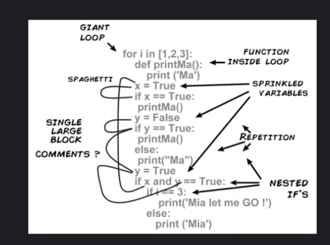
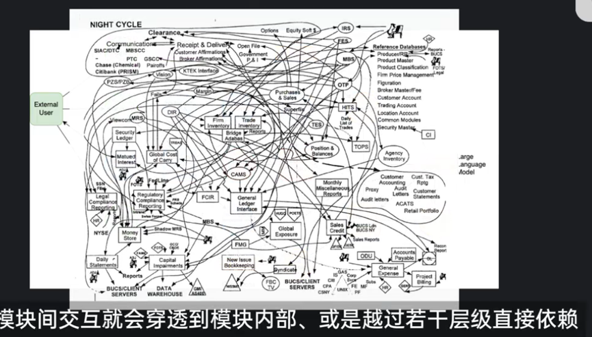

资源管理
资源管理是编程习惯/编程语法设计/架构生命周期设计中所关注的要点。编程的本质是规划和使用计算资源，包括；CPU/GPU、内存、硬盘、网络资源。
尤其对于内存资源的申请、释放，必须做到合理规划的有借有还，避免未借就还（无效释放空指针/野指针释放）、借了不还（内存泄露）、还了又还（重复释放double free）
时间敏感
程序员必须对性能的时间数量级保持敏感，在纳秒、微秒、毫秒、秒之间是1000倍差距，会直接决定了系统是流畅还是卡顿。
在生产环境的开发与部署中，需要对压测敏感，开发后必须通过压力测试提前暴露瓶颈，而不是等上线后被动救火。
性能优化的本质，是把硬件设备的性能发挥到极致，让程序尽可能接近理论速度，比如 CPU 的运算能力、内存带宽、磁盘 IOPS 和网络吞吐的上限。公司的祖传代码往往由于各种版本快速迭代需求，造成大量冗余的运算过程或者繁琐的业务流程，导致浪费消耗 CPU、内存和 IO 资源，导致延迟升高、吞吐下降。
从纳秒到毫秒，差了3个数量级。性能优化时，先判断瓶颈落在哪个量级，再决定优化方向，往往比盲目改代码更有效。
常见编程的时间
| 类别 | 项目 | 典型时间 | 说明 |
|---|---|---|---|
| 时间换算 | 1 秒 | (10^3) ms = (10^6) μs = (10^9) ns | 基本单位换算 |
| CPU | CPU 指令 | 0.1 ~ 5 ns | 单条指令执行时间 |
| CPU Cache | L1 缓存 | 1 ~ 5 ns | 最快，离 CPU 最近 |
| CPU Cache | L2 缓存 | 10 ~ 20 ns | 比 L1 稍慢 |
| CPU Cache | L3 缓存 | 20 ~ 60 ns | 多核共享 |
| 内存 | 内存访问 | 60 ~ 100 ns | 纳秒级，比缓存慢一个量级 |
| 存储 | 固态硬盘 SSD | 0.1 ~ 1 ms | 随机访问远低于顺序访问；比 HDD 快约 100 倍 |
| 存储 | 机械硬盘 HDD | 1 ~ 10 ms | 受机械部件限制，寻道时间占主导 |
| 存储 | 实测硬盘读写 | 1 GB/s；每次写 1 MB，写后 fflush | 吞吐量参考，实际耗时受 fflush 影响 |
| 网络 | 局域网延迟 | 0.1 ~ 1 ms | 同机房/局域网 |
| 网络 | 广域网延迟 | 10 ~ 200 ms | 跨地域公网 |
| 同步原语 | CAS 指令 | 10 ~ 100 ns | 原子比较并交换，如 x86 CMPXCHG，接近内存访问时间 |
| 锁 | 轻量级锁（无竞争） | 50 ~ 200 ns | 如 Linux futex，仅原子操作和用户态判断 |
| 锁 | 重量级锁（有竞争） | 1 ~ 10 μs | 涉及内核态切换，如 pthread_mutex_lock |
| 系统 | 中断处理 | 1 ~ 10 μs | 保存/恢复上下文、执行 ISR |
| 系统 | 线程切换 | 1 ~ 10 μs | 保存/恢复寄存器、刷新 TLB、更新调度状态 |
编程模运算技巧：
按位与运算可能比取模运算快 10-50 倍，具体取决于编译器优化和 CPU 架构。 对 2 的幂取模的优化：当b是 2 的幂时（如b=2,4,8,16…），编译器会自动将a % b优化为a & (b-1)。 // 低效： index = value % 16; // 高效： index = value & 15; // 等价于对16取模，仅适用于正数
条件分支优化：按位与常用于替代条件分支，提高 CPU 流水线效率。 if (x & 1) { /* x是奇数 / } // 比x % 2更快 if (x % 2 == 1) { / 奇数 */ }
// 环形缓冲区大小为2的幂（如256） buffer[position & 255] = data; // 比position % 256快得多
崩溃与混乱
代码80%的崩溃异常都是源自以下几个原因：
-
内存越界：数组越界、缓冲区溢出、悬垂指针、释放后使用。这在 C/C++ 中尤为常见，其他语言为了解决这个问题提出来了各自的方案，如Java/Python取消了指针，Go限制了指针运算，设计内存自动回收，增加了编程语法的安全性，代价是性能成本、GC波动。Rust通过在编译期内存检查保障安全，代价是编译速度和编译缓存。对于数组越界时，在语法上新增为异常报错以限制破坏性。
-
访问了不存在的字段：比如 JSON 里少了一个 key、数据库表删了某列、对象属性拼写错误、接口返回结构变了，代码却还在按老样子取字段。
-
模块间紧耦合的设计与同步：A 模块修改了接口或数据结构，B 模块没有及时跟进，运行时才发现对不上。
-
配置错误：环境变量写错、配置文件格式不对、参数漏配、生产与测试配置不一致等，导致程序启动或运行中异常。对于一个复杂项目，配置环境也会花费不少的时间。
1是程序员的基本功，对内存使用的谨慎也是菜鸟开始蜕变为老鸟的标志。2、3、4是同类错误的不同表现，归根结底是接口设计与生产流程的混乱。外显的原因可能是开发者之间的信息不同步，或者版本迭代、时间变更后的遗忘，或者其他一些千奇百怪的历史遗留问题。要减少这类崩溃，需要做足够的判断、测试、防蠢设计，以及接口规范标准化。
判断：对输入、返回值、外部依赖保持怀疑，该判空判空，该校验校验。
测试：单元测试、集成测试、契约测试，尤其是跨模块的接口测试，要能覆盖字段变更、配置变更等场景。测试随代码变化而同步变化
防蠢设计：让错误尽早暴露，而不是等到在用户手运行时才崩。比如强类型、Schema 校验、默认安全、失败快速。
接口规范标准化：用 OpenAPI、Protobuf、GraphQL Schema 等工具把接口定义固定下来，变更要有版本、有记录、有评审。增加接口变更的成本，让每一次变更都被慎重对待，有流程、有通知、有同步。
编程取舍
适当地面向老板编程，程序员的重点是实现功能，需要接地气的快速方案，而非一味炫技。
提升编程能力或者提高系统性能固然重要，但这些属于加分项，对日常工作而言，过度优化可能属于扣分项。
开发者的第一个系统受限于经验，经常在开发进行到一定程度后才发现技术路线并非最优，或者存在某种重大缺陷。第二个系统则容易陷入第二系统效应，即开发者设计的第二个系统，非常最容易过度设计，堆砌各种花哨功能。
写代码前一定要想清楚核心需求是什么，明确技术路线和现有方案，明确特殊情况哪些是要考虑的，哪些是不考虑的。哪些功能是必要的，哪些功能是可选项，如果要考虑所有情况，可能陷入代码内耗，在不重要的位置浪费大量精力（硬加班）。
人月神话的管理问题
1975的《人月神话》最早发现编程的最大难点是很难协调几十人、上百人在一起共同维护一套复杂系统的代码。人越多，沟通成本越高，进度反而越慢。1人月=1个人工作1个月的工作量。既然1人月是1个人干1个月，那10人月就可以让10个人干1个月，或者1个人干10个月。s布鲁克斯说：这是一种神话。因为人和月不能简单互换，任务之间存在顺序依赖，不能无限并行；新人需要培训，需要了解系统。人员增加后，沟通路径呈平方级增长。很多任务无法拆分，加人反而增加协调成本。于是就有了那条著名的 布鲁克斯法则：向进度落后的项目中增加人力，只会使进度更加落后。
概念完整性：系统设计应该由少数人甚至一个人主导，保持概念上的一致。如果让委员会来设计，往往会得到四不像的系统。
在软件系统的开发过程中，沟通、设计和概念完整性是最重要的。
模块化开发
对于人月神话存在的人与人之间的管理沟通、信息同步、行为风格、想法观点的差异和混乱，模块化和标准化是一个解决方案。
模块化的约束
模块化设计的目的不仅仅是代码的简洁性，而是保障是代码的低成本复用。低成本复用他人的代码是多人协调开发的前提，因此编程才开始去注重类与接口的设计和封装。
- 项目工程组各人的水平参差不齐，新人非常容易写面条代码，需要提前预防。
- 函数级的功能切分是最简单的模块化，也可以实现框架上的模块化，能力强者设计定义函数，弱者实现具体内容
- 单一人员负责单一模块是专业化的模块化
- 模块隔离，不同模块间互相不侵入内部细节，仅提供关键接口和数据
- 代码风格的统一。注释风格、日志风格、类/接口风格、异常处理需要统一概念完整性，设计一套编程规范，日常进行code review或者进行新人培训

模块化的问题
- 模块穿透问题。从外部视角看，模块隔离可能导致代码穿透到模块内部，比如：实现一个功能，在其他各个地方查找7、8个相关参数；修改一个类，影响和重构几十处引用等等。
准确的定义接口可以约束上述代码乱掉的情况，提供标准的功能。

-
沟通成本转移。模块化后，大家不用读彼此的代码了，但需要定义接口、评审接口、同步接口变更、 联调/对协议、处理版本兼容。
-
任务不能无限并行，关键路径仍在。模块化让不同模块可以并行开发，但是核心架构要先设计、公共依赖要先完成、接口要先冻结、集成/联调/测试往往串行。
根据阿姆达尔定律，无论你怎么模块化，总有一部分是串行的。加人只能加速可并行部分，不能加速关键路径。
- 学习成本不会因为模块化消失。新人加入后，即使只负责一个模块，也要理解消化大量知识。比如，这个模块在系统中的位置，它依赖谁、谁依赖它，接口语义、错误码、边界条件，整体业务流程。
模块化降低的是局部复杂度，不是系统级理解成本。新人仍然需要时间，而这段时间老成员要带他，整体效率反而短期下降。
- 概念完整性难以靠模块化保证。模块化容易导致：每个模块各自为政、接口风格不统一、异常处理/日志/配置各搞一套、边界职责模糊。结果就是模块化后系统整体概念不一致，集成时问题更多。概念完整性是设计问题，不是拆分问题。